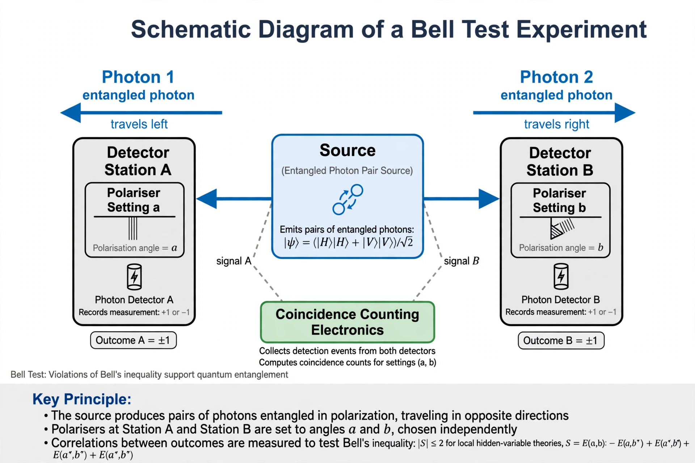

Bell's theorem
| Proved | 1964, John Stewart Bell |
|---|---|
| Statement | No local hidden-variable theory can reproduce all quantum predictions |
| Tests | Freedman–Clauser 1972; Aspect 1982; loophole-free 2015 |

[Image: Schematic of a Bell test: a source emits entangled photon pairs to two distant detectors with switchable settings]Bell's theorem is a term encompassing a number of closely related results in physics, all of which determine that quantum mechanics is incompatible with local hidden-variable theories, given some basic assumptions. 'Local' means that an object can be directly influenced only by its immediate surroundings; 'hidden variables' are hypothetical properties that would determine measurement outcomes in advance.
The theorem was proved by John Stewart Bell in 1964, building on the 1935 EPR paradox of Einstein, Podolsky and Rosen. Its experimentally testable consequence — a Bell inequality — says that the statistical correlations between measurements on entangled particles are bounded in any local realistic theory. Quantum mechanics predicts violations of the bound, and experiments have observed them ever more stringently, culminating in simultaneous closure of the major 'loopholes' in 2015. The 2022 Nobel Prize in Physics went to John Clauser, Alain Aspect and Anton Zeilinger for these experiments.
Background: EPR
Einstein, Podolsky and Rosen argued that because measurements on one of two entangled particles instantly fix predictions about the other, quantum mechanics must omit some 'elements of reality' — hidden variables that predetermine outcomes. Bohr replied that the systems form an indivisible whole. Bell asked what any theory restoring locality and predetermined values would predict, and found it conflicted with quantum mechanics itself.
The inequality and its tests
The CHSH form of the inequality bounds a correlation combination S by 2 for local hidden-variable theories, while quantum mechanics allows S up to 2√2 ≈ 2.83 (the Tsirelson bound). Experiments measure S ≈ 2.7. The 2015 loophole-free experiments (in Delft, Vienna and Boulder) closed both the detection and locality loopholes at once, given standard assumptions such as measurement settings independent of the hidden variables. What the theorem rules out is the conjunction of locality and predetermined outcomes; options retained by some include nonlocal hidden variables (pilot-wave theory), retrocausality and superdeterminism.